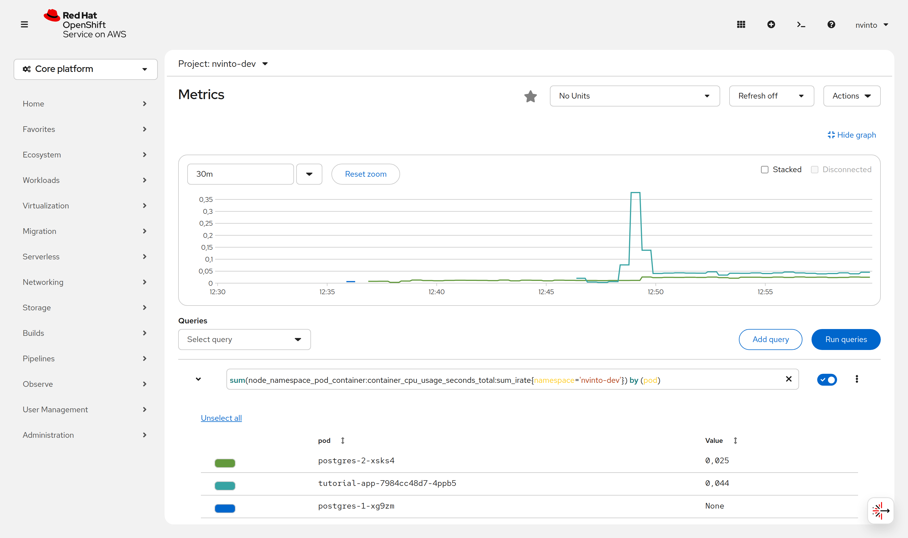
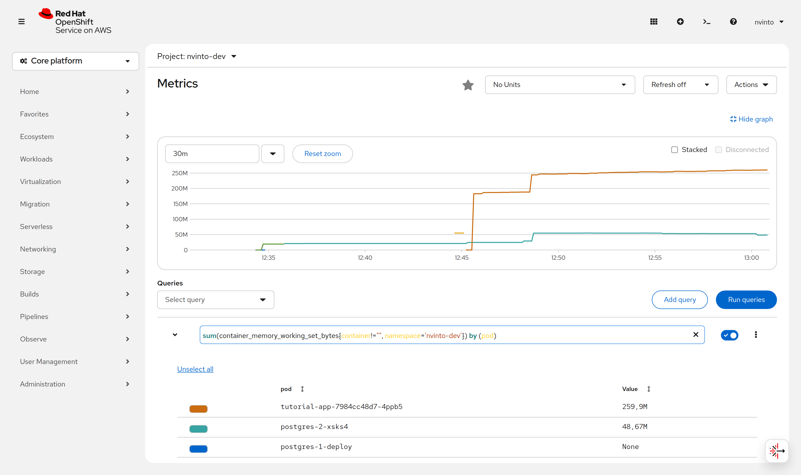

Adjust resource quotas
By default, containers run with unbounded compute resources on a Kubernetes cluster. Developer Sandbox is a managed OpenShift environment, its cluster resources are tailored per development needs.
Discovering project resource limits
With resource quotas, cluster administrators can restrict resource consumption and creation on a namespace basis.
There will always be concerns that one Pod or Container could monopolize all available resources.
To avoid that, within a namespace, a Pod or Container can consume as much CPU and memory as defined by the namespace’s/project’s resource quota.
To discover the resource quota established for your namespace/project you can run the following command:
oc get resourcequotaNAME REQUEST LIMIT
compute-build requests.cpu: 0/3, requests.memory: 0/14Gi limits.cpu: 0/20, limits.memory: 0/14Gi
compute-deploy requests.cpu: 110m/3, requests.memory: 768Mi/30Gi limits.cpu: 1500m/30, limits.memory: 912Mi/30Gi
compute-spacerequests count/spacerequests.toolchain.dev.openshift.com: 0/1
storage count/persistentvolumeclaims: 3/10, requests.storage: 40Gi/80Gi limits.ephemeral-storage: 0/15Gi
compute-build applies to short-lived (terminating) Pods such as S2I builds, while
compute-deploy applies to long-running Pods. A build and a deployment therefore draw from two
different budgets.
|
At namespace/project level a LimitRange policy is employed to constrain resource allocations (to Pods or Containers).
You can find out the LimitRange established for a namespace by running oc get limitrange and ask for its description via:
oc describe limitrange resource-limitsThe output should be something similar to:
Name: resource-limits
Namespace: <your-namespace>
Type Resource Min Max Default Request Default Limit Max Limit/Request Ratio
---- -------- --- --- --------------- ------------- -----------------------
Container memory - - 64Mi 1000Mi -
Container cpu - - 10m 1 -The above LimitRange has enforced the default request/limit for compute resources in the namespace and automatically injects them into Containers at runtime.
Because of this injection, a container that declares no resources section does not run
unbounded here — it silently inherits 10m/64Mi requests and 1/1000Mi limits. Keep this in mind
in the Sizing resource limits chapter, where we look for containers without limits.
|
Adjusting container resources
By using a tool called hey, you can run a load test on your server and see how your system performs under different circumstances.
Let’s run a hey command against the route exposed by the previous deployment:
export ROUTE_URL=https://$(kubectl get route tutorial-app -o jsonpath='{.spec.host}') (1)
hey -z 60s -c 20 $ROUTE_URL/messages (2)| 1 | The Quarkus OpenShift extension names the Service, Deployment and Route after the application
(the artifactId of your pom.xml), not after the container image, so the route is tutorial-app. |
| 2 | hey has no -v flag. A short run such as -n 10 -c 4 also finishes before Prometheus scrapes
anything, so use a sustained load (-z 60s) to see a curve on the graphs. |
hey needs no extra flags for the HTTPS route: the edge certificate is signed by the cluster’s
default wildcard certificate, which your system trust store already accepts.
|
In the OpenShift console navigate to Observe → Metrics.
Switch the Project: selector at the top of the page to your own project — the page opens on
All Projects, which a Developer Sandbox user is not allowed to query — then open the Select query
drop-down and pick CPU Usage or Memory Usage to check the resources consumed by each of your pods:


| OpenShift 4.21 replaced the Developer / Administrator perspectives with a single Core platform navigation, and Select query is now a typeahead field. |
Based on that you can adjust your container resources in application.properties:
# Configuration file
# key = value
quarkus.openshift.resources.limits.cpu=500m
quarkus.openshift.resources.limits.memory=400Mi
quarkus.openshift.resources.requests.cpu=100m
quarkus.openshift.resources.requests.memory=256Mi|
Do not size the CPU limit purely on the steady-state measurement (this application idles at about
With |
The resources in the target/kubernetes folder will be reworked at compile time and contain these new definitions.
You can now deploy the changes by using the command:
./mvnw clean package -Dquarkus.openshift.deploy=true -Dquarkus.container-image.push=trueAnd verify the values that ended up on the Pod:
kubectl get deployment tutorial-app -o jsonpath='{.spec.template.spec.containers[0].resources}' | jq{
"limits": { "cpu": "500m", "memory": "400Mi" },
"requests": { "cpu": "100m", "memory": "256Mi" }
}